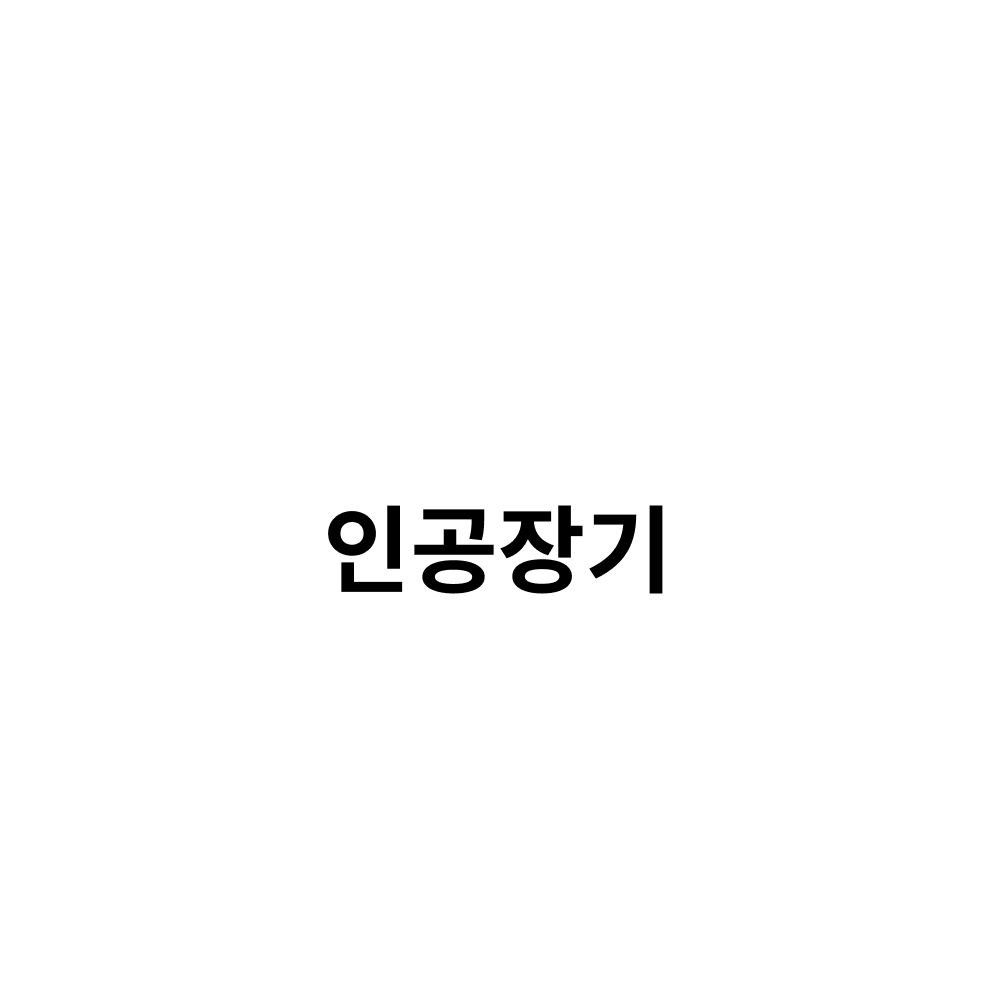

제어 (control) 이란 비교적 광범위한 개념으로 '목적에 알맞은 동작을 하도록 필요한 조작을 가하는 것' 을 뜻한다.
오늘날 제어라고 하면 피드백 (되먹임, feedback) 의 개념이 포함된 피드백 제어를 뜻하는데,
이는 피드백에 의해 제어량 (출력) 을 목표치 (입력) 와 비교하여 그 둘이 일치하도록 수정동작을 행하는 제어를 말한다.
이 용어는 공학에서 다루는 특정한 물리적 미디어에 국한되지 않고 사회, 경제, 생물, 정치 등과 같은 분야에서도 널리 적용된다.
인공장기
인공 장기(人工臟器, artificial organs) 또는 인공 기관은 인간의 신체 장기를 대용하기 위하여 인간 이외의 동물의 장기를 이용하거나 또는 생체 공학 기술을 토대로 하여 만들어 내는 인위적, 기계적 장치나 장기를 말한다.
필터나 화학 처리 장치와 같이 고정 전원 공급 장치 또는 다른 자원에 얽매인 것은 인공 장기로 정의되지 않는다.
(정기적인 배터리 충전, 화학 물질의 보충, 필터를 청소하거나 교체하는 것들은 인공 장기라고 불리는 장치에서 제외된다.)
따라서 신장 투석 기계와 같은 신장의 기능을 완벽히 대체하는 성공적이고 매우 중요한 생명 유지 장치는 인공 장기가 아니다.
아직까지 완전한 의미의 효율적이고 독립적인 인공 신장은 개발되지 않았다.
인공장기 개발
진단기기 / 치료기기 개발
생명과학 실험기기 개발

본 연구실은 인공심장, 심폐기, 인공심장박동기 등 다양한 인공장기를 설계, 개발하여 왔으며
국내 기업 및 병원들과의 공동 연구를 통해
자체 개발한 제품의 효능과 안전성을 입증하고 상업화를 추진하여 왔다.
인공장기를 연구하며 개발된 공학-의학의 융합기술은 자동응급심폐소생술기기, 전기자극기 등의 다양한 치료기기/진단기기의 개발에 응용되었으며
국내 의료기기 기술의 경쟁력을 높이는데 기여하고 있다.
또한 체외에서 생체장기/생체조직을 생존시키는 실험기기와 시스템을 개발함으로써
의학/생명과학분야의 발전에 기여하고 질병퇴치 및 국민 건강 증진에 공헌하고자 한다.